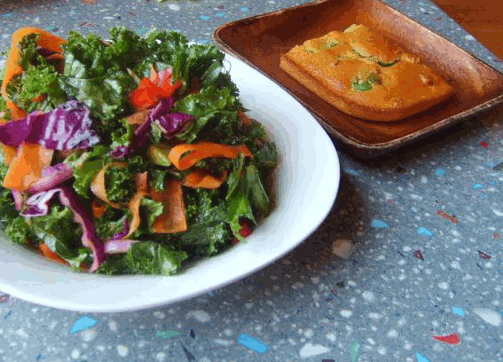
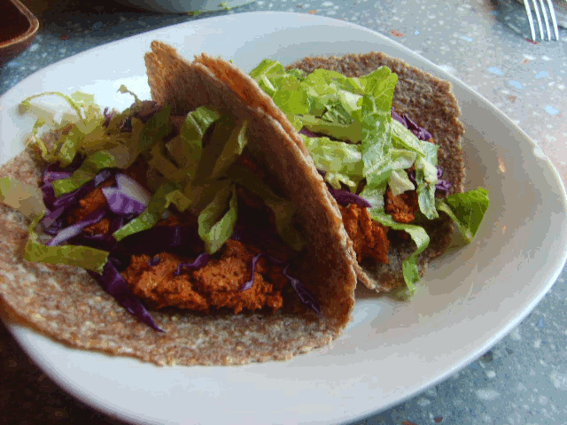

St. Louis Restaurant Guide for Students
This section lists information on several nutrients, including their function and food sources. It is intended for educational purposes only. A comprehensive guide to essential nutrients is available at: http://www.whfoods.com/nutrientstoc.php
Magnesium- Magnesium is an important mineral that is used in bone formation as well as in the relaxation of nerves and muscles (1). Some good sources of magnesium include pumpkin seeds, soybeans, wild salmon, and beans (1).
Zinc- Zinc helps to balance blood sugar and prevent a weakened immune system (1). Some good sources of zinc are white mushrooms, beef tenderloin, turkey, pumpkin seeds, and sesame seeds (1).
Omega- 3 Fatty Acids - Omega 3 is a useful nutrient for a number of reasons. It decreases blood clotting, reduces heart attack, and it may also lower triglycerides (2). Excellent sources of omega-3 are flaxseed, walnuts, and wild salmon (2).
Vitamin E - Vitamin E helps protect skin from ultraviolet light and prevent cell damage from free radicals (1). Good sources of vitamin E include sunflower seeds and almonds (1).
Iron - Iron is used to help produce energy and prevent fatigue and weakness (1). Good sources of iron include soybeans, lentils, spinach, and beans (1).
Vitamin B12 - Vitamin B12 is only found in animal products, which is a potential concern for vegans and vegetarians (2). Vegans can get vitamin B12 from fortified foods such as soy/almond milk, cereals, or nutritional yeast. Lacto-ovo vegetarians can get vitamin B12 from eggs and/or dairy products, but additional supplement may also be needed.
Calcium - Calcium is needed to strengthen bone and enamel of teeth (2). Good sources of calcium are dairy products, salmon, spinach, and beans (2).
Vegadeli (Chesterfield, MO) - Vegadeli is a vegan cafe in Chesterfield. It is a good option for nutritional value because their menu emphasizes fruits, vegetables, and whole grain. Since their menu changes daily, visitors can look for menu items that include leafy greens or nuts for the best nutritional content.
Crazy Bowls & Wraps (Various locations) - Crazy Bowls & Wraps is a healthy alternative to typical fast food restaurants. Their bowls have a variety of vegetables and your choice of grain and protein. For optimal nutritional value, choose a whole grain (brown rice, whole wheat noodles, or quinoa) for the grain. Whole grains are a great source of antioxidants, various vitamins, and fiber (3) .They also have wild Alaskan salmon available as a protein for a $1.00 surcharge, a price that is affordable for students. Wild Alaskan salmon is an excellent source of Omega-3, Vitamin D, Vitamin B3, Vitamin B12, Selenium, Magnesium, Calcium, and various other nutrients (1).
Sacred Grounds Cafe (Edwardsville, IL) - Sacred grounds cafe includes nutrient-rich ingredients in all of their paninis, wraps, and salads. These ingredients include hummus (made of garbanzo beans), spinach, wild rice, walnuts, and almonds.
Blueberry Hill (Delmar Loop) - Blueberry Hill has several highly nutritional options available on their menu. One nutritional option is red beans and rice. This entree features kidney beans, which is an excellent source of magnesium, iron, protein, and other nutrients (1). They also have a veggie burger that is comprised of Bulgar wheat, mushrooms, onions, broccoli, cooked brown rice, red and yellow bell peppers, Anaheim chilies, carrots, salt, garlic, egg whites, and rolled oats (4). The variety of whole grains and vegetables in this burger make it a great option for obtaining a variety of nutrients.
Noodles & Company (Various Locations) - Noodles & Company has many dishes that contain nutrient-rich spinach, mushrooms, and a wide variety of vegetables. They also offer the option of substituting whole-grain linguine in their dishes. An extensive nutrition guide for Noodles & Company is available at: http://www.noodles.com/nutrition/index.php
Check Ingredients: Look for foods with high nutritional value that are listed throughout the "Key Nutrients" section.
Whole grain: Often times a menu item will offer a choice of grain. Choosing a whole grain option will have more nutritional value than a white grain option. Sources of whole grain include whole wheat, brown rice, oatmeal, and quinoa.
Substitution: Side dishes such as French fries can often be substituted for a more nutritional option.
Condiments: Condiments that are high in fat such as bacon, cheese, and mayonnaise can usually be left off of menu items such as sandwiches. This will typically reduce the fat content by about 10 grams (5).
References:
1. "Essential Nutrients in the World's Healthiest Foods". The George Mateljan Foundation. http://www.whfoods.com/nutrientstoc.php
2. Contemporary Nutrition. Wardlaw, Gordon M., and Smith, Anne. 7th Edition, McGraw-Hill.
3. "Whole Grains 101", from Whole Grains Council website: http://www.wholegrainscouncil.org/whole-grains-101
4. Blueberry Hill online menu: http://www.blueberryhill.com/menus/
5. http://www.livestrong.com/thedailyplate/. Information based on 9 grams of fat for 2 slices of bacon, 11 grams of fat for 1 tbsp of mayonnaise, and 12 grams of fat in two slices of cheddar cheese.
(The pictures included are menu itmes taken at Vegadeli)